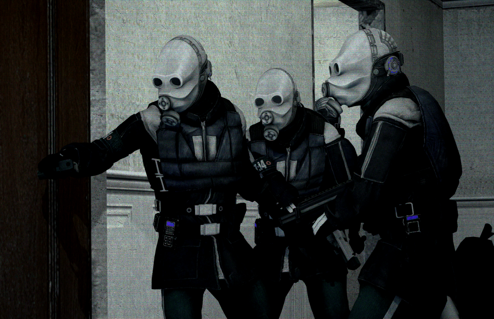

Proteção Civil
A Proteção Civil é uma facção dos Combine que opera em cada distrito urbano. Embora procedimentos específicos possam variar conforme o ambiente, o principal objetivo da Proteção Civil é manter o status quo das cidades sob supervisão dos Combine através de um controle implacável e totalitário sobre a população humana remanescente.
Regras
As seguintes regras se aplicam fora do personagem ao interpretar membros da Proteção Civil. Quebrar essas regras pode resultar em blacklist e até banimento do servidor.
0. Use o bom senso. Abusar da whitelist ou brincar de forma indevida resultará em banimento permanente.
1. Não entregue itens a cidadãos por nenhum motivo. Isso inclui prestar ajuda médica, com exceção de casos onde é necessário preservar a vida do cidadão para fins de interrogatório ou julgamento.
2. Se você precisar ficar AFK por um período prolongado, troque de personagem ou desconecte-se. Não fique AFK fora da JE.
3. Em INÓPIA: 2016, a substituição obrigatória de memória fez com que seu personagem seja indiferente à causa dos Combine; agir intencionalmente contra a vontade dos Combine não é permitido.
4. Os cidadãos que você contiver são sua responsabilidade. Não saia do personagem nem troque de unidade sem garantir que a libertação deles será feita por você ou outro membro.
5. Você deve permanecer no personagem, interpretando de forma profissional e com bom padrão de roleplay. Como um dos papéis mais proeminentes e opressivos para a maioria dos jogadores, isso é importante.
Se você tiver dúvidas ou preocupações sobre esse conjunto de regras, entre em contato com um líder de facção para esclarecimentos e/ou autorização.
| FORÇAS DA OVERWATCH | |
| Proteção Civil | |
|  | |
| A autoridade policial metropolitana local dos Combine, designada para preservar a sócio-estabilidade por quaisquer meios necessários. |
Comportamento
A Proteção Civil é uma função séria e muitas vezes difícil dentro do servidor. Aqueles que tiverem dúvidas sobre sua aptidão não devem se candidatar.
Embora novas unidades geralmente tenham algum tempo para se adaptar, não espere que alguém pegue na sua mão. As unidades devem tomar iniciativa para aprender com membros mais experientes e operar de acordo com as informações disponíveis na wiki.
Ser opressor e rígido como uma unidade da Proteção Civil não é apenas fiel ao universo de Half-Life 2, mas é também um requisito para impedir que jogadores cidadãos se aproveitem de unidades complacentes ou "amigáveis" da PC. Parecer frio e procedimental perante a população desencoraja crimes e reforça o tom distópico do servidor.
Lembre-se de que você está em menor número em relação aos cidadãos. Manter-se alerta, diligente e em sincronia com outras unidades fortalece a ilusão de controle.
Sua unidade, e até mesmo a família dela, pode ser descartada a qualquer momento por baixo desempenho, então tenha isso em mente ao cogitar confraternizar ou ser leniente com um cidadão.
Terminologia
Leia: Terminologia
Seguir o protocolo de terminologia coesa garante que outras unidades consigam interpretar corretamente sua comunicação, além de manter as informações uniformes e consistentes. É obrigatório utilizar terminologia coesa em todos os momentos fora da Jurisdição de Estabilização, ao alcance auditivo de cidadãos e em todos os canais de rádio, exceto o rádio interno de uma EP.
Terminologia coesa inclui Manter as mensagens clínicas, objetivas e na terceira pessoa; Usar jargões e códigos de rádio; Garantir que as mensagens sejam descritivas, porém concisas; Utilizar o rádio sempre que possível para comunicações internas.
É uma boa prática revisar o que você vai dizer antes de finalizar a mensagem, pois ela pode ser tornada mais concisa, adequada à terminologia ou, até mesmo, desnecessária.
Códigos da Cidade
Leia: Códigos da Cidade
Os Códigos da Cidade são as "leis" que fazem parte do dever da Proteção Civil em aplicar e fazer cumprir entre a população civil. O objetivo dessas "leis" não é auxiliar os cidadãos, mas sim preservar a sócio-estabilidade da Cidade 11.
Espera-se que as unidades da Proteção Civil apliquem acusações com base em evidências conclusivas, e não apenas na palavra de outro cidadão.
Embora seja possível que um indivíduo viole vários códigos da cidade simultaneamente (como fugir enquanto carrega contrabando), não é apropriado “pescar” por múltiplas infrações sobrepostas apenas para inflar o registro do cidadão.
Autuando
Ao autuar um indivíduo conforme descrito nesta seção, declare as acusações no seguinte formato. Isso não se aplica se o suspeito estiver resistindo ativamente, inconsciente ou se estiver recebendo um veredito terminal.
VOCÊ ESTÁ SENDO ACUSADO PELO | CÓDIGO DA CIDADE | ### NOME DA INFRAÇÃO | VEREDITO
Exemplo:
Cidadão, você está sendo acusado pelo código da cidade 62 ALARMES. Sua sentença é uma citação por má-complacência.
Você está sendo acusado pelo código da cidade 148 RESISTÊNCIA À PRISÃO. Sua sentença é 10 ciclos de detenção.
Citação por Má-complacência
Uma citação por má-complacência é a punição corporal de um cidadão por meio de golpes com o pacificador.
Isso deve ser feito enquanto o sujeito estiver contido e em uma área segura.
Detenção
Indivíduos que foram designados para "ciclos" sob contenção devem ser deixados inconscientes, contidos e revistados.
Após aplicar a acusação e o status, mova o indivíduo para uma cela dentro da Jurisdição de Estabilização e registre a sentença no terminal.
O número máximo de ciclos ao acusar um cidadão é 8.
Veredito Terminal
Um veredito terminal é a eliminação controlada de um indivíduo considerado uma ameaça à prosperidade social. Esta é uma consequência de violações de SÓCIO-PERICULOSIDADE NÍVEL CINCO, ou inferior, caso o índice de estabilidade esteja FRATURADO.
Os designados devem ser transferidos, pacificados, para uma cela na Jurisdição de Estabilização. Antes de esterilizá-los, você deve solicitar um banimento de personagem digitando /pk <acusação>.
Amputação Imediata
Amputação imediata é a eliminação instantânea e no local de um indivíduo.
Um sujeito designado para veredito terminal pode ser amputado imediatamente se qualquer um dos seguintes critérios for atendido:
- O sujeito representa ou prestes a representar uma ameaça direta às forças da Overwatch.
- O sujeito está em uma zona restrita ou prestes a fugir para uma.
- O Índice de Estabilização Política está em FRATURADO ou ISENÇÃO DE JULGAMENTO.
- O sujeito foi designado para esterilização como testemunha.
- Ordem direta da Dispatch ou de Líderes de Classificação.
Documentação
Todas as violações ao código civil da cidade devem ser documentadas no registro do indivíduo antes da autuação.
Para documentar uma transgressão, adicione um registro contendo apenas o número da violação e deduza os pontos correspondentes. Altere o status do cidadão para DETIDO se ele estiver sendo sentenciado a ciclos, e para CIDADÃO novamente ao ser liberado. Por exemplo:
99 | -4
148 | -8
MUDANÇA DE STATUS: DETIDO
Se um cidadão for procurado por uma violação, defina primeiro o status civil como FDO, depois adicione o registro como no exemplo acima, precedendo o número com [BOL].
Cidadãos que cooperarem com as forças da Overwatch podem receber um Ato Cívico, a critério da unidade, registrado como 'COOPERAÇÃO'.
Status
Os cidadãos recebem um status com base em sua posição aos olhos da Overwatch. Esses status podem ser modificados pelas unidades da Proteção Civil por meio de seus PDAs.
CIDADÃO
Um membro padrão e livre da força de trabalho da cidade.
DETIDO
Um prisioneiro que está atualmente detido e cumprindo sua sentença no bloco de contenção.
FDO
Um indivíduo de interesse que está sendo procurado por violar o código civil da cidade. Isso acionará câmeras próximas.
ANTI-CIDADÃO
Um elemento maligno atuando dentro da cidade cuja cidadania foi revogada. Isso acionará câmeras próximas.